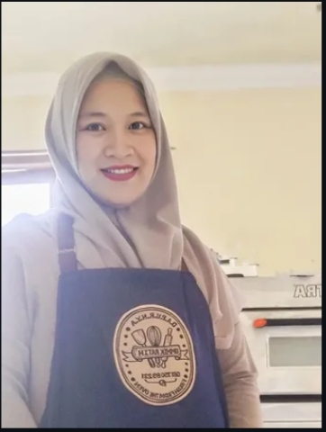

Berawal dari kegemaran menyajikan kudapan manis untuk keluarga tercinta, Dapurnya Ummi Kratih lahir untuk membagikan kehangatan rumah melalui setiap gigitan kue kami.
Kami percaya bahwa bahan terbaik adalah kunci utama. Oleh karena itu, kami hanya menggunakan mentega premium, cokelat pilihan, dan tanpa bahan pengawet. Setiap pesanan dibuat secara fresh-to-order untuk menjaga kualitas dan rasa yang autentik.
Bahan pilihan berkualitas
Dibuat langsung saat dipesan